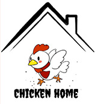

Trên thế giới hiện nay, gà thịt được nuôi phần lớn theo quy mô công nghiệp, chu kỳ nuôi ngắn, hiệu quả kinh tế cao. Thịt gà là nguồn đạm động vật có chất lượng cao giá rẻ. Ngoài đạm, thịt gà lại ít chất béo. Các món ăn từ thịt gà rất đa dạng và phong phú.
Do đó, Chicken home xuất hiện với mục đích cung cấp những món ăn chế biến từ thịt gà chất lượng, thơm ngon đến từ nhiều vùng miền khác nhau Quý khách có thể đến nhà hàng chúng tôi để trải nghiệm những dịch vụ tốt nhất tại nhà hàng hoặc đặt món qua menu được cung cấp trên trang website
Địa chỉ: 20/21B Thích Quảng Đức, Phường 5, Quận Phú Nhuận, TPHCM
Số điện thoại: 0937705798
Fanpage: Chicken Home
